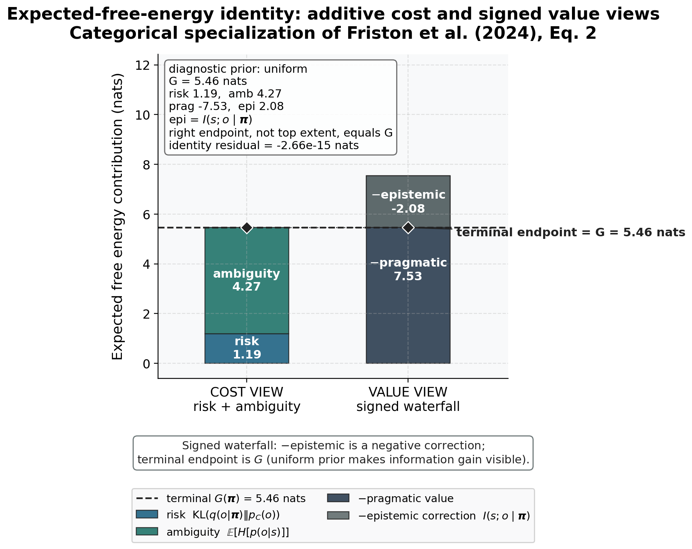

Formalism: recovery limits, EFE, and tempered aggregation
The primitives of Section 5 are governed by a compact
set of machine-checkable identities. Their counter is monotone across
the methods and this section: Definition 1 and Definition 2 (posterior and cavity /
PVI update, Section 5.3); Lemma 3 (Rényi KL
limit, Section 5.6);
Proposition 4 (\(\beta\)-loss and rcce NLL limits, Section 5.7); Theorem 5
and Corollary Corollary 6
(belief-sharing and Bayes recovery, Section 5.8);
and Proposition 7 below
(expected-free-energy identity). Each carries a tested residual. None
grants a bounded-influence guarantee to the server-side
robust_aggregate heuristic; that boundary is stated in
Section 3.3.
Recovery limits as the proof surface
The recovery limits separate client and server claims. The divergence
and loss limits recover the standard-Bayes client update; the
independently tested
robust_aggregate(robustness=0) == log_linear_pool identity
recovers the project’s standard server pool. Under the explicit
shared-support, posterior-log-potential, and fixed-weight assumptions in
Section 5.8,
that pool is a categorical specialization of Eq. 7’s message-combination
term, not recovery of the complete source protocol
(Friston et al. 2024). We collect the five residuals that pin those
limited claims, each emitted by the test-suite and reported in Section 7.1, never
hardcoded. Read each row of the table below as a triple: the robust
primitive, the trusting knob value at which it must collapse onto its
standard-Bayes or project-local counterpart, and the tested residual
measuring whatever gap survives at that value. The rows differ in what
kind of check they are. The divergence and loss rows evaluate inside the
implementation’s closed-form switch band, so their zeros are exact
branch identities — guaranteed by construction, not measurements that
could have come out otherwise. Their genuine falsifiers are the
off-switch convergence residuals, evaluated just outside the
band (at \(\alpha = 1.00001\), \(\beta = 1e-06\), \(q_{\rm loss} = 1.00 \times 10^{-6}\)) where
the general formulas run and a nonzero gap is possible: those residuals
are 1.66 ^{-5}, 1.24 ^{-5}, and 1.12 ^{-5} respectively, and any failure
of those quantities to shrink toward the limit would falsify the
containment claim. The posterior row is a measured identity on the
general code path, so its near-zero residual is itself the falsification
surface. The aggregate row’s zero at exactly \(c=0\) is likewise branch-exact; the
identity is additionally exercised on the iterative code path at
near-zero robustness, where the consensus must still land on the
log-linear pool to tight tolerance.
| Identity (owner statement) | Trusting limit | Tested residual |
|---|---|---|
| Rényi \(\to\) KL (Lemma 3, Eq. (2)) | \(\alpha \to 1\) | 0 |
| rcce \(\to\) NLL (Proposition 4, Eq. (4)) | \(q_{\rm loss} \to 0\) | 0 |
| \(\beta\)-loss \(\to\) NLL (Proposition 4, Eq. (3)) | \(\beta \to 0\) | 0 |
| generalized posterior \(\to\) Bayes (Corollary Corollary 6, Eq. 6) | KL, NLL | 5.55e-17 |
robust_aggregate \(\to\) log-linear pool (Theorem 5, Eq. (6)) |
\(c = 0\) | 0 |
The central project identity is the aggregation collapse of Eq. (6):
robust_aggregate(robustness=0) equals the log-linear pool
Eq. (5). Its source
bridge is deliberately narrow. Take a finite common support with \(q_n(s)>0\) and represent each Eq. 7
softmax input as a posterior log potential \(m_n(s)=\log q_n(s)+\kappa_n\), with \(\kappa_n\) constant in \(s\) and fixed declared weights \(w_n\) independent of the emerging
consensus. Softmax then cancels the additive constants and yields the
project pool. This identifies only the source equation’s
message-combination term; it does not identify source message
construction, cavity/exclusion policy, scheduling, generative factors,
or the complete protocol. Theorem 5 (Section 5.8)
states that specialization and the local \(c=0\) identity; the residual 0 above pins
the latter. Corollary Corollary 6 establishes
the separate client result: generalized_posterior(KLD, NLL)
reproduces the closed-form prior-times-likelihood Bayes posterior of
Eq. 6 to residual
5.55e-17. Pooling such local posteriors has the stated categorical
specialization only under the theorem’s assumptions. The honesty
contract binds here: the theorem and corollary cover only the recovery
identity and the per-agent rigorous axis (Proposition 4); no
statement transfers the bounded-influence guarantee to the server-side
divergence-reweighting heuristic, whose positive property is the \(\texttt{robustness}=0\) limit of Eq. (6). A scoped
no-go rejects a declared separable objective class without certifying
another.
Expected-free-energy identity as an algebraic check
The active-inference substrate that drives the studies of Section 7 is a categorical specialization of the expected-free-energy algebra discussed by Friston et al. (Friston et al. 2024). It decomposes the expected free energy of a policy \(\boldsymbol{\pi}\) into two equivalent two-term forms. The risk-plus-ambiguity (cost) view and the negated pragmatic-plus-epistemic (value) view are the same scalar \(G(\boldsymbol{\pi})\) rearranged (Da Costa et al. 2020; Friston et al. 2024):
\[ G(\boldsymbol{\pi}) \;=\; \underbrace{\text{risk} + \text{ambiguity}}_{\text{cost view}} \;=\; -\big(\underbrace{\text{pragmatic} + \text{epistemic}}_{\text{value view}}\big). \] {#eq:efe-decomposition}
The two views are not approximations of one another; they are the same scalar rearranged. In the implementation the shared entropy term enters both sides of the rearrangement, so the identity residual is zero by construction — it is a definitional consistency check on the decomposition’s bookkeeping, not an independent measurement. The scientific content lives in the per-term semantics, which are pinned independently of the identity (see the closing clause of the proposition below):
\[ \big(\text{risk} + \text{ambiguity}\big) \;+\; \big(\text{pragmatic} + \text{epistemic}\big) \;\equiv\; 0 . \] {#eq:efe-identity}
Proposition 1 (Expected-free-energy decomposition
identity). For the categorical generative model of
expected_free_energy.py, the cost decomposition and the
negated value decomposition of (Eq. (17)) yield the
same \(G(\boldsymbol{\pi})\), so the
identity (Eq. (18))
holds with a residual at machine precision. The risk term is \(\mathrm{KL}(q(o\mid\boldsymbol{\pi})\,\|\,p_C(o))\),
the ambiguity term is the expected likelihood entropy \(\mathbb{E}_{q(s)}[H[p(o\mid s)]]\), the
pragmatic value is the expected log-preference \(\mathbb{E}_{q_{\boldsymbol{\pi}}(o)}[\ln
p_C(o)]\), and the epistemic value is the state-outcome mutual
information \(H[q_{\boldsymbol{\pi}}(o)] -
\mathbb{E}_{q(s)}[H[p(o\mid s)]]\); the identity follows from the
cross-entropy split of the risk and the entropy split of the epistemic
value. The residual of the decomposition is pinned to zero at a
tolerance of \(10^{-9}\), and each
term’s semantics is pinned independently (deterministic likelihoods give
zero ambiguity; uninformative likelihoods give zero epistemic value;
preference-matched predictions lower risk).
The executed formal-specialization diagnostic of Figure 7 uses a uniform prior over the nine locations. This is intentional: the canonical sentinel-world \(D_0\) is a point mass at the den, and under that fully resolved prior the mutual-information term is zero because there is no state uncertainty for an observation to reduce. The uncertainty-bearing diagnostic makes the epistemic term visible without changing the canonical \(D_0\) used by the inference and recovery studies. Thus a near-zero epistemic value is a meaningful null condition, not a missing term. Figure 7 shows the additive risk-plus-ambiguity view beside a signed pragmatic/epistemic waterfall whose terminal endpoint is \(G(\boldsymbol{\pi})\), labels epistemic value as \(I(s;o\mid\boldsymbol{\pi})\), and annotates the identity residual; it visualizes Proposition 7, not a fitted result, so it carries no error bars.

The expected-free-energy identity of Eq. (18) is the action-selection counterpart of the inference-side recovery limits collected above: both are exact, closed-form, machine-checkable identities over the same categorical generative model. Together they establish that the FedGVI-federated active-inference colony of this work is built on verified algebra throughout — the per-agent generalized-Bayes update recovers standard Bayes, the aggregation recovers the project log-linear pool under its qualified categorical bridge, and the policy scoring decomposes exactly — so every robustness result in Section 7 is a controlled departure from a known, tested fixed point rather than an unmoored claim.
Tempered aggregation free energy and the accuracy-guarantee trade
The recovery limits and the expected-free-energy identity fix the endpoints of the aggregation family; the remaining formal question is what a controlled departure from the unit-entropy server buys and what it costs. The objective-backed variational aggregator of Section 11 holds its consensus-entropy term at unit weight. Freeing that single coefficient produces a one-parameter family whose only moving part is the sharpness of the consensus, and whose raw effective-weight bound is provably untouched. The following proposition isolates exactly that separation — algebra that moves versus algebra that does not — before the interpretation subsections turn to the empirical accuracy question the algebra cannot settle on its own.
Proposition 2 (Tempered aggregation free energy). Let \(\lambda > 0\) be an entropy weight and \(F_\lambda\) the objective of equation~Eq. (24). For a fixed effective-weight vector \(a\), the \(q\)-block minimizer of \(F_\lambda\) is the tempered-softmax update in equation~Eq. (25). At \(\lambda = 1.0\) the objective, both block updates, and the endpoint-selection rule reduce to the standard variational aggregate (Definition 10, Section 11) bit-for-bit. The \(a\)-block update and its raw effective-weight bound \(a_n \le w_n\) contain no \(\lambda\) and are therefore unchanged for every \(\lambda > 0\).
The proposition is intentionally more specific than the phrase “temperature improves robustness.” It identifies exactly which part of the variational server changes when the entropy coefficient changes, and it separates that algebra from the empirical accuracy question. The objective and its update rules are a generalized-Bayes construction in the sense of (Bissiri et al. 2016; Knoblauch et al. 2022), while the particular client/server decomposition is the one implemented and tested here.
What the entropy weight controls
For a fixed effective-weight vector \(a\) and \(\lambda>0\), the \(q\)-block in Eq. (25) is a weighted geometric pool of the local posteriors with inverse temperature \(1/\lambda\). Lower \(\lambda\) concentrates more sharply on states that receive consistent log-belief support; larger \(\lambda\) spreads probability mass and retains more entropy. As \(\lambda\downarrow0\), the positive-temperature expression approaches a winner-take-most consensus (subject to ties and finite numerical support), whereas large \(\lambda\) approaches a flatter distribution. The implementation exposes that endpoint as a separately defined deterministic tied-argmax rule; it does not substitute \(\lambda=0\) into the objective or coordinate update. This is a controlled change in the consensus geometry, not an automatic outlier detector.
The coupling matters. Although the formula for the \(a\)-block does not contain \(\lambda\), the fixed point can still change because \(a_n\) is evaluated at the new \(q\). The correct statement is therefore conditional: for any current consensus, the effective-weight update and the raw bound \(a_n\leq w_n\) are unchanged; after alternating updates, different temperatures can reach different coupled \((q,a)\) fixed points. This distinction prevents the temperature result from being read as a theorem that the normalized influence or accuracy is invariant in \(\lambda\).
Recovery at the qualified log-linear-pool corner
At the configured default \(\lambda=1.0\), the entropy coefficient is the unit coefficient used by the original variational aggregator. The implementation therefore recovers that aggregator bit-for-bit, including its block updates and its endpoint-selection rule. Turning the robustness strength \(c\) to zero then sets every server weight to its base value and gives the tempered log-linear pool. At the default temperature this is the ordinary log-linear pool of Eq. (5). Under the shared-support, posterior-log-potential, and fixed-weight assumptions of Section 5.8, that is the categorical specialization of Eq. 7’s message-combination term; it is not the complete belief-sharing protocol of (Friston et al. 2024). Away from that default, the result is a tempered generalization of the pool and should not be described as Friston’s Eq. 7 itself.
This nested limit is useful for interpretation. The \(c\to0\) limit identifies the aggregation
family with a known consensus operator; the \(\lambda=1.0\) slice identifies the
objective-backed implementation used in the main server comparison.
Neither limit grants the server-side robust_aggregate
heuristic a variational objective or a bounded-influence guarantee. The
FedGVI literature’s rate and robustness results remain attached to their
stated loss, divergence, and sampling assumptions (Mildner et al. 2025; Mildner et al. 2025).
What the accuracy–guarantee trade can establish
The executed grid over \(\lambda\in\{0.1, 0.2, 0.3, 0.5, 0.7, 1\}\) is a finite sensitivity study, not a search over a continuous optimum. It asks whether any tested temperature narrows the point-accuracy gap to the sharp heuristic while retaining the same effective-weight update. The closest tested temperature is \(\lambda^{\ast}=0.3\), with observed gap \(0.0008\). These tokens are computed from the executed contaminated-colony trials and are reported with the grid definition so a reader can reproduce the selection rule.
The result has two distinct readings. If a lower temperature improves the paired point-accuracy comparison, it provides design evidence that entropy regularization can be tuned rather than accepted as a fixed conservatism penalty. If no tested temperature closes the gap, that negative result is still informative: within this objective family, the same entropy mechanism that keeps consensus diffuse can limit exact point recovery under confident contamination. In either case, the grid does not identify a universally best temperature, establish minimax robustness, or transfer the variational raw weight bound to a different estimator. Generalized-Bayes calibration and robust-loss theory motivate the family, but only the executed categorical design supports the present finite-grid statement (Bissiri et al. 2016; Knoblauch et al. 2022; Mildner et al. 2025).
Publication-facing interpretation
The practical contract is consequently three-part. Use the default temperature when exact compatibility with the tested variational server is the priority. Explore the declared grid when the application can trade concentration against the same raw effective-weight control. Treat any selected temperature as a configuration-specific empirical choice until it is tested under a new contamination mechanism, colony size, sensor model, or loss. This is the appropriate bridge between the formal objective and the active-inference setting: it exposes a tunable consensus geometry while keeping recovery, guarantee, and accuracy claims on separate evidence tracks.